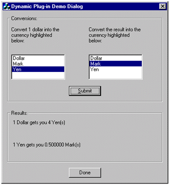
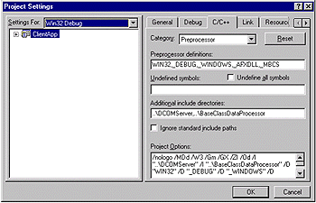

| ||
Steve Robinson
Panther Software
Now that we have completed the DCOM server and have created three dynamically interchangeable plug-ins, it is time to tie them all together in a client application. As noted in the beginning of Part 2, the client application will provide a list of currencies and request dollar equivalents from the DCOM server. When the DCOM server processes the request, it returns the dollar conversion value to the client through the client's ICallBackObj interface.
To accomplish this, the client application is the responsible for creating the ICallBackObj interface and handing it to the DCOM server. In Part 1, we included CallBackObj.idl in the DCOM server's IDL file, so that the DCOM server would have intimate knowledge of the interface and so that the ICallBackObj interface could be passed as a signature type to the DCOM server. We could have generated the ICallBackObj methods with the MIDL compiler separately from the DCOM server application and passed an IUnknown* to the DCOM server. The DCOM server would then have to QueryInterface for IID_ICallBackObj. This methodology would work effectively, and is very similar to using Connection Points. However, passing an IUnknown* interface and querying for IID_ICallBackObj results in a run-time error if the passed interface does not support ICallBackObj. The methodology used in our sample results in a compile-time error if any interface other than an ICallBackObj is passed in IDCOMServerObj::RegisterCallBack. A general rule of thumb is to use Connection Points in situations where the client may be implemented in script; use a proprietary interface when you desire a proprietary call back.
Before we proceed and implement the ICallBackObj in the client and process the results returned from the DCOM server, let's review a bit more of the required functionality in the client. Once the client receives the dollar conversion value from the server, we also want to show the originally selected currency type converted into a third currency (currency traders call this cross trading). Accordingly, we need to be able to select the source currency as well as the target currency and load the plug-in data converter for the target currency. When we are done, our client application should look like the application below:

Figure 12. The currency conversion application
We need to generate a dialog-based application using the MFC Application Wizard. In the samples that come with the article, we created a dialog-based application and assigned "ClientApp" as the application name. The other wizard defaults are fine.
Once the application is generated, we need to obtain a connection to the DCOM Server. Setting up a client application for connecting to an ATL-based COM server requires the following steps:
Steps 1 and 2 involve including a series of files in the projects and making sure the project can locate the files that are included. This is accomplished by setting "Additional include directories" under menu item Project Settings | C++ | Category Preprocessor, as shown in the screen shot below. In addition to including the relative path to the DCOM server, we also include the relative path to the BaseClassDataProcessor folder, since we will eventually need the method declarations for IBaseClassDataProcessorObj.

Figure 13. Adding the relative path
Making the CLSID and IIDs available is now pretty easy. At the top of ClientAppDlg.cpp, we simply add the lines:
//midl generated code with interface prototypes #include <DCOMServer.h> //CLSID and IID #include <DCOMServer_i.c>
That provides us with the interface method prototypes and the CLSIDs and IIDs of the DCOM server.
In order to add the ATL-related declarations and variables in stdafx.h, we add the following lines that declare all our ATL-related variables and function declarations.
//Add the includes for ATL and atlimpl.cpp since there is //there is no ATL lib file. #include <atlbase.h> extern CComModule _Module; #include <atlcom.h> #include <atlimpl.cpp>
The last step is to initialize the CComModule variable that is declared in stdafx.h above. Inside the application module, CClientApp.cpp, we create stdafx.h's externally declared _Module variable and initialize it. Also, even though the wizard-provided defaults enabled the application as an ActiveX Control Container, they did not provide us with the one line required to initialize COM. This very important line is AfxOleInit().
//----------------------------------------------------------------
CComModule _Module;
/////////////////////////////////////////////////////////////////
// CClientAppApp initialization
BOOL CClientAppApp::InitInstance()
{
AfxOleInit(); //initialize OLE
AfxEnableControlContainer();
//ATL loading
_Module.Init(NULL, NULL);
…
We are now actually ready to implement the ICallBackObj in the client. Our C++ class representation of ICallBackObj will be CCallBackObj. Because ICallBackObj derives from IDispatch, the CCallBackObj class needs to inherit not only from CComObjectRoot (which handles reference counting) but also from IdispatchImpl, which provides a default implementation for the IDispatch portion of the interface on this COM object.
In addition to providing the implementation of ICallBackObj::ReceiveDataFromServer, we need to provide one more method, SetOwnerWindow. When we receive data from the DCOM Server, the data is being sent on a thread that belongs to the DCOM server. Since we are using MFC, data needs to be processed on the main thread that hosts the MFC GUI objects. In order to move data from the DCOM server's worker thread back to our application's main thread, we have the ICallBackObj::ReceiveDataFromServer method post a message to the application's main thread with the data as the message's LPARAM. The complete source for CallBackObj.h is listed below; pay special attention to the ReceiveDataFromServer method:
#ifndef __CALLBACKOBJ_H_
#define __CALLBACKOBJ_H_
#include "resource.h" // main symbols
#include <DCOMServer.h> //midl generated code
class CCallBackObj :
public CComObjectRoot,
public IDispatchImpl<ICallBackObj, &IID_ICallBackObj,
&LIBID_DCOMSERVERLib>
{
public:
CCallBackObj()
{
m_pOwnerWnd = NULL;
m_lLastDataReceivedFromServer = -1;
}
void SetOwnerWindow(CWnd* pOwnerWnd)
{
m_pOwnerWnd = pOwnerWnd;
}
DECLARE_PROTECT_FINAL_CONSTRUCT()
BEGIN_COM_MAP(CCallBackObj)
COM_INTERFACE_ENTRY(ICallBackObj)
COM_INTERFACE_ENTRY(IDispatch)
END_COM_MAP()
protected:
CWnd* m_pOwnerWnd;
long m_lLastDataReceivedFromServer;
public:
STDMETHOD(ReceiveDataFromServer)(/*[in]*/ long lData)
{
AFX_MANAGE_STATE(AfxGetStaticModuleState())
if(m_pOwnerWnd != NULL &&
m_pOwnerWnd->GetSafeHwnd())
{
//post a message since we are on a different thread
//which will put us back on the main thread
m_lLastDataReceivedFromServer = lData;
m_pOwnerWnd->PostMessage( WM_RECEIVE_DATA_FROM_PLUG_IN,
0, m_lLastDataReceivedFromServer);
}
return S_OK;
}
};
#endif //__CALLBACKOBJ_H_
Our next step is to connect to the server, create the ICallBackObj interface, set the owner window, and pass the ICallBackObj to the server. The correct place to do this is in OnInitDialog, since we are using class member variables to hold the COM objects. The source code from OnInitDialog that does this is shown below:
IUnknown* pUnk = NULL;
HRESULT hRes = ::CoCreateInstance(CLSID_DCOMServerObj, NULL, CLSCTX_ALL,
IID_IUnknown, (void**)&pUnk);
if(SUCCEEDED(hRes))
//get our IDCOMServerObj into our class member
hRes = pUnk->QueryInterface(IID_IDCOMServerObj, (void**)&m_pIDCOMServerObj);
pUnk->Release();
pUnk = NULL;
ASSERT(SUCCEEDED(hRes));
ASSERT(m_pIDCOMServerObj != NULL);
if(SUCCEEDED(hRes))
{
//create the CCallBackObj and set the owner window
hRes =
CComObject<CCallBackObj>::CreateInstance(
&m_pIServerCallBack);
ASSERT(SUCCEEDED(hRes));
if(SUCCEEDED(hRes))
{
m_pIServerCallBack->SetOwnerWindow(this);
//registher the interface with the DCOM Server
hRes = m_pIDCOMServerObj-RegisterCallBack( m_pIServerCallBack);
ASSERT(SUCCEEDED(hRes));
}
}
}
The next to-do item is to obtain the CLSIDs of available plug-ins that support IBaseClassDataProcessorObj for currency conversions. This is also done in OnInitDialog, but rather than instantiating the COM objects at this time, we will place the currency names in a list box for display and their CLSIDs as data items in the list box entries. Here is the code that does this:
/*
Fill the list box with available plug-ins.
Each plug-in has an easy to use name and a CLSID as string. All plug-ins support
the same interface.
The easy to use name goes in the list box to display the CLSID as string
goes in the list box's item data.
*/
BOOL bCLSID = FALSE;
CString sKey =
_T("Software\\PantherCurrencyComponents\\AvailablePlugInDataProcessors\\");
//first open the registry key
HKEY hKey = NULL;
LONG lRes = ::RegOpenKeyEx(HKEY_LOCAL_MACHINE, sKey, 0,
KEY_READ, &hKey);
if (lRes == ERROR_SUCCESS && hKey != NULL)
{
DWORD dwIndex = 0; DWORD size;
TCHAR buff[128]; LONG lRes;
DWORD type; byte buff2[128];
DWORD size2 = 128;
//Read registry entries until the end of key is reached
while(TRUE)
{
buff[0] = '\0';
size = 128;
lRes = ::RegEnumValue(hKey, dwIndex++, buff, &size,
NULL, &type, buff2, &size2);
if(lRes == ERROR_SUCCESS)
{
CString sKeyName = buff;
int iIndex = m_ListBoxWithCLSIDs.AddString(sKeyName);
CString* psClsid = new CString(buff2);
m_ListBoxWithCLSIDs.SetItemData(iIndex, (DWORD)psClsid);
CString sTemp = *psClsid;
sTemp += _T("\n");
TRACE(sTemp);
}
else
{
break;
}
}
// now close the registry key
::RegCloseKey(hKey);
hKey = NULL;
}
if(m_ListBoxWithCLSIDs.GetCount())
m_ListBoxWithCLSIDs.SetCurSel(0);
Now, let's take a look at what occurs when data is received from the DCOM Server. As we saw earlier, ICallBackObj::ReceiveDataFromServer posts a WM_RECEIVE_DATA_FROM_PLUG_IN message back to this dialog. The dialog picks up the message vis-à-vis the message-mapped function OnMessageFromPlugIn.
The LPARAM of the message is the actual dollar conversion rate (long value) received from the DCOM server, so it is displayed as is in a static control. But we do want to "cross trade" the original currency into another currency that may not be Dollars. Accordingly, we need to load the plug-in converter that performs the currency conversion. Since the CLSIDs of the all the conversion plug-ins are already loaded in a list box, and they all support the same interface, all we need to do is determine which list box entry is highlighted, obtain its data item, covert it to a CLSID, cocreate the COM object, and make a method call. The code that does this is shown below:
/*
1) Get index from list box.
2) Get string from item data.
3) Convert to CLSID
4) CoCreateInstance
5) Call interface method.
*/
iIndex = m_ListBoxWithCLSIDs.GetCurSel();
if(iIndex < 0)
{
::MessageBox(NULL, _T("Please highlight a plug-in"), _T("Message"), MB_OK);
return -1;
}
CString sPlugInCurrency;
m_ListBoxWithCLSIDs.GetText(iIndex, sPlugInCurrency);
if(sPlugInCurrency.Find(_T("Dollar")) != -1)
sPlugInCurrency = _T("Dollar");
else if(sPlugInCurrency.Find(_T("Mark")) != -1)
sPlugInCurrency = _T("Mark");
else if(sPlugInCurrency.Find(_T("Yen")) != -1)
sPlugInCurrency = _T("Yen");
else
{
ASSERT(false);
}
CString* pstrCLSID = (CString*)m_ListBoxWithCLSIDs.GetItemData(iIndex);
CComBSTR bstr(*pstrCLSID);
CLSID clsid;
HRESULT hRes = ::CLSIDFromString(bstr, &clsid);
if(!SUCCEEDED(hRes))
{
::MessageBox(NULL, _T("Higlighted item does not have a valid CLSID"),
_T("Message"), MB_OK);
return -1;
}
IUnknown* pUnk = NULL;
hRes = CoCreateInstance(clsid, NULL, CLSCTX_ALL,
IID_IUnknown, (void**)&pUnk);
if(SUCCEEDED(hRes))
{
IBaseClassDataProcessorObj* pIDataProcessor = NULL;
hRes = pUnk->QueryInterface(IID_IBaseClassDataProcessorObj, (void**)
&pIDataProcessor);
pUnk->Release();
if(SUCCEEDED(hRes))
{
float fltValueFromDataProcessor;
hRes = pIDataProcessor->ProcessData(1, &fltValueFromDataProcessor);
ASSERT(SUCCEEDED(hRes));
pIDataProcessor->Release();
//sTargetCurrency contains target currency
CString sMessage = _T("1 ");
sMessage += sTargetCurrency;
sMessage += _T(" gets you ");
sValue.Format(_T("%f "), ( ((float)1)/ fltValueFromDataProcessor /
((float)lValueFromServer)));
sMessage += sValue;
sMessage += sPlugInCurrency;
sMessage += _T("(s)");
pWnd = GetDlgItem(IDC_STATIC_RESULT2);
pWnd->SetWindowText(sMessage);
}
else
{
::MessageBox(NULL, _T("Selected component does not support
IID_IBaseClassDataProcessorObj interface"),
_T("Message"), MB_OK);
}
}
Other than submitting requests to the server (which is done in CClientAppDlg::OnSubmit()), that is pretty much everything the client does. One of the benefits of interface immutability is that it allows for extensibility through plug-ins that can be created independently of the applications that use them. Your next step is to port these COM objects to Windows CE, move to Chicago, and get a seat of the Chicago Board of Trade.
Panther Software is a software design and consulting company that provides advanced technology solutions to leading software companies and IT divisions of Fortune 1000 companies. Panther can be reached on the Internet at www.panthersoft.com .
.
Did you find this material useful? Gripes? Compliments? Suggestions for other articles? Write us!
© 1999 Microsoft Corporation. All rights reserved. Terms of use.